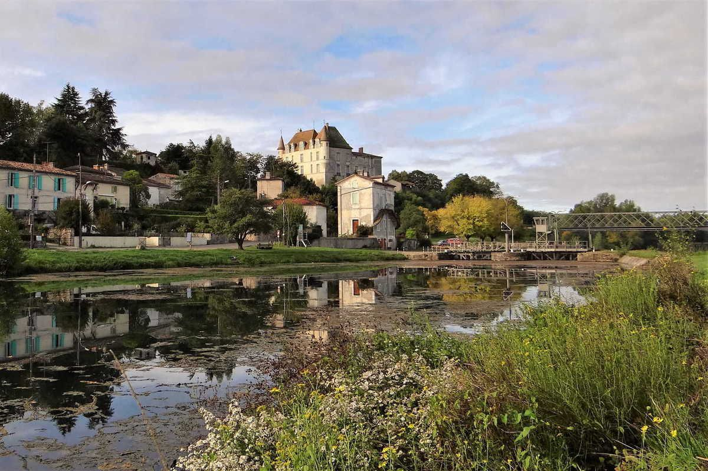
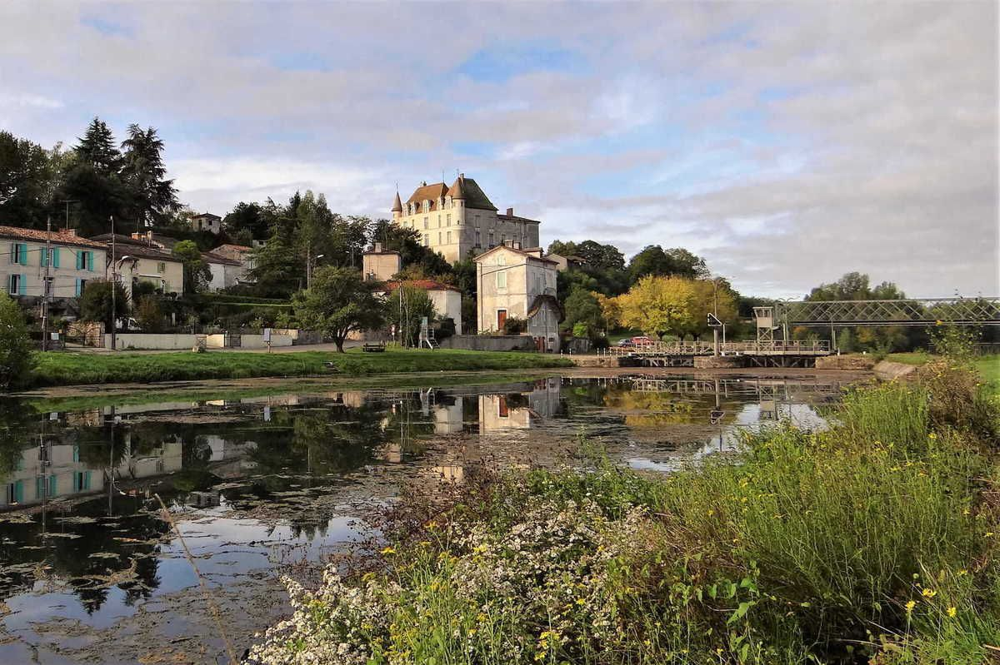

La commune de Castets et Castillon
Castets et Castillon est issue de la fusion des deux communes Castets-en-Dorthe et Castillon de Castets depuis le 1er janvier 2017. Située à 40 km au Sud-Est de Bordeaux, la commune se trouve dans le Sud-Gironde, au point de confluence du Canal de Garonne et du fleuve la Garonne. Le château du Hamel est un des principaux lieux touristiques du village, il a été édifié au xive siècle à la demande de Raymond Guilhem de Goth, neveu du Pape Clément V et réaménagé au xvieme siècle par Jean de Fabas puis à nouveau au xviie siècle. Il est inscrit au titre des monuments historiques par arrêté du 20 juin 1963. Castets et Castillon est issue de la fusion des deux communes Castets-en-Dorthe et Castillon de Castets depuis le 1er janvier 2017. Située à 40 km au Sud-Est de Bordeaux, la commune se trouve dans le Sud-Gironde, au point de confluence du Canal de Garonne et du fleuve la Garonne.
 

Les origines du Canal
Le canal latéral à la Garonne, ou canal de Garonne, est un canal latéral français de petit gabarit datant du xixe siècle, qui relie Toulouse à Castets et Castillon (Gironde) près de Bordeaux, où il rejoint la Garonne. Il est l'indispensable prolongement du canal du Midi, offrant des conditions de navigation plus sûres et plus confortables que l'ancienne navigation sur le fleuve Garonne, souvent soumise aux périodes de fort étiage ou de crue. Le canal est ouvert en totalité à la navigation le 12 mars 1856. Avec le canal du Midi qui relie Toulouse à Sète, il forme le canal des Deux-Mers entre la Méditerranée et l'océan Atlantique.
Les Associations de Castets et Castillon
Les marchés du Canal est une entité regroupant plusieurs assocaitions de la commune de Castets et Castillon. Nous pouvons y compter: Le club de l'amitié, l'Association des Parents d'élèves, ainsi que les comités des fêtes de Castillon de Castets et de Castets en Dorthe. Toutes ces associations ont pour but de former une seule et même équipe durant trois soirées afin de vous accueillir sur les bords du canal de Castets en Dorthe lors de marchés nocturnes. Ces marchés nocturnes seront animés par différents prestataires sélectionnés par nos soins, vous pourrez vous restaurer sur places grâce à des exposants qui vous proposeront sur places des produits locaux de qualité. Vous aurez ainsi une selections de produits comme de la paellas, du canard, du cochon mais aussi des produits viticoles locaux ainsi que du pain.